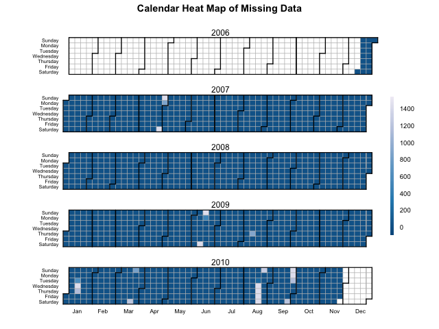
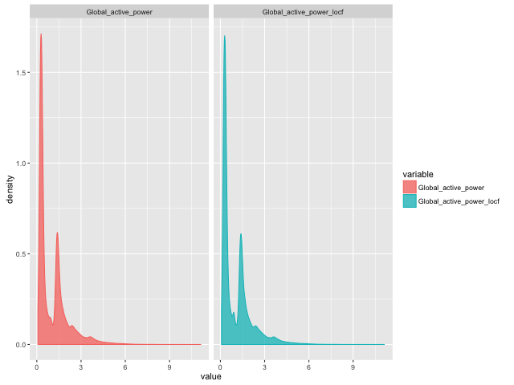
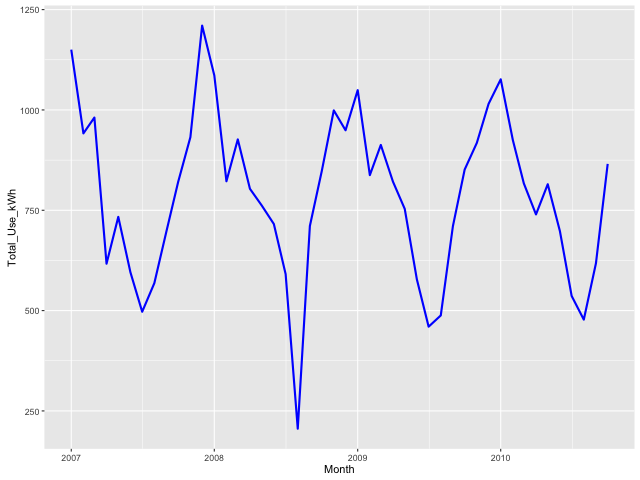
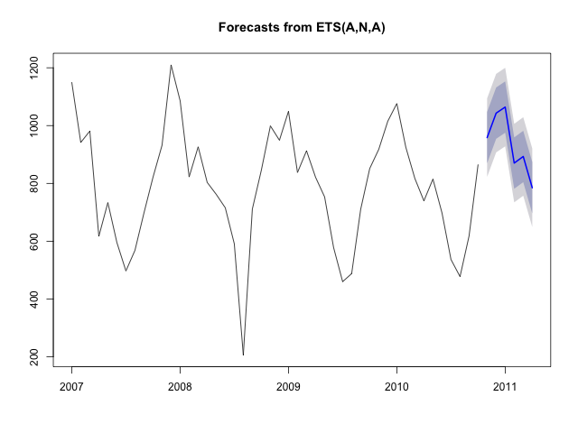
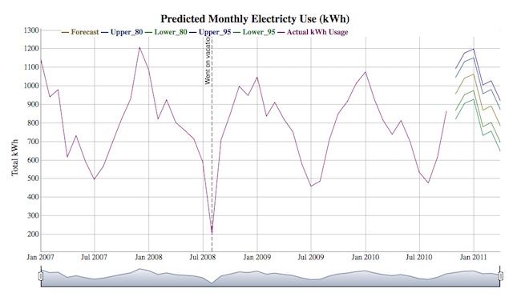

Chapter 1 of Business Intelligence with R
Chapter 1. The Analytics Problem.
Instructions: M-x org-babel-execute-buffer or C-c C-v b to evaluate all buffer.
1 The Analytics Problem
The data we'll use in this chapter contains 2+ million records of minute-scale power consumption in a single household for about 47 months, collected by Electricité de France and archived at the UCI Machine Learning Repository. The data set's page can be accessed here for more details, but for convenience, the attributes of this dataset are as follows:
- date: date in format dd/mm/yyyy
- time: time in format hh:mm:ss
- global_active_power: household global minute-averaged active power (in kilowatts)
- global_reactive_power: household global minute-averaged reactive power (in kilowatts)
- voltage: minute-averaged voltage (in volts)
- global_intensity: household global minute-averaged current intensity (in amperes)
- sub_metering_1: energy sub-metering No. 1 (in watt-hours of active energy). It corresponds to the kitchen, containing mainly a dishwasher, an oven, and a microwave (hot plates are not electric but gas powered).
- sub_metering_2: energy sub-metering No. 2 (in watt-hours of active energy). It corresponds to the laundry room, containing a washing-machine, a tumble-drier, a refrigerator, and a light.
- sub_metering_3: energy sub-metering No. 3 (in watt-hours of active energy). It corresponds to an electric water-heater and an air-conditioner.
Our purpose is to describe past monthly power usage and forecast potential usage for six months following the last full month of data in the dataset.
1.1 Load the packages
## Remove all workspace data rm(list = ls()) Install_And_Load <- function(Required_Packages) { Remaining_Packages <- Required_Packages[!(Required_Packages %in% installed.packages()[,"Package"])]; if(length(Remaining_Packages)) { install.packages(Remaining_Packages, repos='http://cran.rstudio.com/'); } for(package_name in Required_Packages) { library(package_name,character.only=TRUE,quietly=TRUE); } } ## Specify the list of required packages to be installed and load Required_Packages <- c("zoo", "dplyr", "reshape2", "forecast", "ggplot2", "htmlwidgets", "dygraphs"); ## Call the Function and load packages Install_And_Load(Required_Packages); ## Set the working directory setwd("~/src/BIwR/src") writeLines("\n\t\t :: Required packages loaded ...") ## This package will allow us to interpolate between missing time series values ## require(zoo) ## These packages provide functions for easy data wrangling ## require(dplyr) ## require(reshape2) ## This package provides automated forecasting of time series data ## require(forecast) ## This package allows us to create publication-quality plots ## require(ggplot2) ## This package allows creation of javascript widgets for use in webpages ## require(htmlwidgets) ## This packages uses htmlwidgets to make time series widgets ## require(dygraphs)
:: Required packages loaded ...
1.1.1 Acquire data
Download the data from a zipped flat file (semi-colon delimted .txt format) on the UCI Machine Learning Repository:
destinationfile <- "../data/household_power_consumption.zip" downURL <- "http://archive.ics.uci.edu/ml/machine-learning-databases/00235/household_power_consumption.zip" if(!file.exists(destinationfile)){ ## Download the zip file into the data folder download.file(downURL, destfile = destinationfile) ## Unzip the data from the zip file into the Data folder unzip(destinationfile, exdir = "../data") ## Read the data into R ## NAs are represented by blanks and ? in this data, so need to change power <- read.table("../data/household_power_consumption.txt", sep = ";", header = T, na.strings = c("?",""), stringsAsFactors = FALSE) } else { ## Read the data into R ## NAs are represented by blanks and ? in this data, so need to change power <- read.table("../data/household_power_consumption.txt", sep = ";", header = T, na.strings = c("?",""), stringsAsFactors = FALSE) } writeLines(paste("\n\t\t :: Dataframe loaded from file with", nrow(power), "row ::"))
:: Dataframe loaded from file with 2075259 row ::
1.1.2 Wrangling data
We'll look at the structure of the data to see what's been read in:
# str gives you the structure of the dataset str(power)
'data.frame': 2075259 obs. of 9 variables: $ Date : chr "16/12/2006" "16/12/2006" "16/12/2006" "16/12/2006" ... $ Time : chr "17:24:00" "17:25:00" "17:26:00" "17:27:00" ... $ Global_active_power : num 4.22 5.36 5.37 5.39 3.67 ... $ Global_reactive_power: num 0.418 0.436 0.498 0.502 0.528 0.522 0.52 0.52 0.51 0.51 ... $ Voltage : num 235 234 233 234 236 ... $ Global_intensity : num 18.4 23 23 23 15.8 15 15.8 15.8 15.8 15.8 ... $ Sub_metering_1 : num 0 0 0 0 0 0 0 0 0 0 ... $ Sub_metering_2 : num 1 1 2 1 1 2 1 1 1 2 ... $ Sub_metering_3 : num 17 16 17 17 17 17 17 17 17 16 ...
The Date and Time variables were read in as characters, so we'll
convert them to date and time classes, respectively, as well as create
a new DateTime column:
# Convert date to an ISO date power$Date <- as.Date(power$Date, format="%d/%m/%Y") # Create a DateTime object power$DateTime <- as.POSIXct(paste(power$Date, power$Time)) # Obtain the Month and Year for each data point power$Month <- format(power$Date,"%Y-%m") # Add the first to each Y-m combo and convert back to ISO Date power$Month <- as.Date(paste0(power$Month, "-01")) # Verify the changes str(power)
'data.frame': 2075259 obs. of 11 variables: $ Date : Date, format: "2006-12-16" "2006-12-16" ... $ Time : chr "17:24:00" "17:25:00" "17:26:00" "17:27:00" ... $ Global_active_power : num 4.22 5.36 5.37 5.39 3.67 ... $ Global_reactive_power: num 0.418 0.436 0.498 0.502 0.528 0.522 0.52 0.52 0.51 0.51 ... $ Voltage : num 235 234 233 234 236 ... $ Global_intensity : num 18.4 23 23 23 15.8 15 15.8 15.8 15.8 15.8 ... $ Sub_metering_1 : num 0 0 0 0 0 0 0 0 0 0 ... $ Sub_metering_2 : num 1 1 2 1 1 2 1 1 1 2 ... $ Sub_metering_3 : num 17 16 17 17 17 17 17 17 17 16 ... $ DateTime : POSIXct, format: "2006-12-16" "2006-12-16" ... $ Month : Date, format: "2006-12-01" "2006-12-01" ...
1.1.3 Summary of variables
# Get an overview of the variables summary(power)
Date Time Global_active_power
Min. :2006-12-16 Length:2075259 Min. : 0.076
1st Qu.:2007-12-12 Class :character 1st Qu.: 0.308
Median :2008-12-06 Mode :character Median : 0.602
Mean :2008-12-05 Mean : 1.092
3rd Qu.:2009-12-01 3rd Qu.: 1.528
Max. :2010-11-26 Max. :11.122
NA's :25979
Global_reactive_power Voltage Global_intensity Sub_metering_1
Min. :0.000 Min. :223.2 Min. : 0.200 Min. : 0.000
1st Qu.:0.048 1st Qu.:239.0 1st Qu.: 1.400 1st Qu.: 0.000
Median :0.100 Median :241.0 Median : 2.600 Median : 0.000
Mean :0.124 Mean :240.8 Mean : 4.628 Mean : 1.122
3rd Qu.:0.194 3rd Qu.:242.9 3rd Qu.: 6.400 3rd Qu.: 0.000
Max. :1.390 Max. :254.2 Max. :48.400 Max. :88.000
NA's :25979 NA's :25979 NA's :25979 NA's :25979
Sub_metering_2 Sub_metering_3 DateTime
Min. : 0.000 Min. : 0.000 Min. :2006-12-16 00:00:00
1st Qu.: 0.000 1st Qu.: 0.000 1st Qu.:2007-12-12 00:00:00
Median : 0.000 Median : 1.000 Median :2008-12-06 00:00:00
Mean : 1.299 Mean : 6.458 Mean :2008-12-05 18:39:03
3rd Qu.: 1.000 3rd Qu.:17.000 3rd Qu.:2009-12-01 00:00:00
Max. :80.000 Max. :31.000 Max. :2010-11-26 00:00:00
NA's :25979 NA's :25979
Month
Min. :2006-12-01
1st Qu.:2007-12-01
Median :2008-12-01
Mean :2008-11-21
3rd Qu.:2009-12-01
Max. :2010-11-01
We can see from the summary that there are about 26k missing values
(NAs) in our primary variable, Global_active_power — about 1.25% of
the ~2 million records. We can quickly get a table and graph of
missing data over time by setting a counting marker for missing values
with ifelse, then using the dplyr package to group and summarize
the data, and finally pull a ready-made R function from the web to
create a calendar graph that shows the daily distribution of the
missing values.
In first place we will download the calendar heat map from revolutionanalytics.com:
reqRUrl <- "http://blog.revolutionanalytics.com/downloads/calendarHeat.R" reqRFile <- "./calendarHeat.R" if(!file.exists(reqRFile)){ ## Download the zip file into the data folder download.file(reqRUrl, destfile = reqRFile) source(reqRFile) } else { source(reqRFile) } writeLines("\n\t\t :: Required library loaded ...")
:: Required library loaded ...
# Use ifelse to count each minute that is NA power$Missing <- ifelse(is.na(power$Global_active_power), 1, 0) # Use dplyr's group_by function to group the data by Date power_group_day <- group_by(power, Date) # Use dplyr's summarize function to summarize by our NA indicator # (where 1 <- 1 minute with NA) power_day_missing <- summarize(power_group_day, Count_Missing = sum(Missing))
Now we can generate the graph:

Figure 1: Calendar Heat Map of Missing Data
You can view the actual values of missing data on each day by
exploring the power_day_missing data frame.
The "recent" 4-5 day spans of missing data may be a little concerning since we want to perform automated forecasting. However, since we're aggregating to months and forecasting into months with very few missing values, we should be ok. But to make automatic forecasting work, we need to fill in those missing values. If we convert each missing value to 0, we'll definitely underestimate usage for those times.
A reasonable first pass is to carry the last value forward, which we
can do with the na.locf function in the zoo package. While other
approaches are possible (and perhaps better, e.g., using some sort of
mean or median value instead of the last value, or even a seasonal
Kalman filter), we'll proceed with this option to keep the example
simple.
# Use zoo to perform interpolation for missing time series values power$Global_active_power_locf <- na.locf(power$Global_active_power) # Compare the original and interpolated distributions # Reshape the two variables into long form for ggplot power_long <- melt(power, id.vars= "DateTime", measure.vars = c("Global_active_power", "Global_active_power_locf"))
Now we can generate the new graph

Figure 2: Power fixed missing time series values histogram
The overall shape hasn't changed, though we can see a small spike at about 1 kW in the last-observation-carried-forward data. This should be fine for our purposes, as the overall pattern is essentially the same.
Now that we have a complete time series, we can determine total monthly use (kWh). While we're at it, we can calculate maximum demand for a given month (kW) over the period of record as an example of how to calculate multiple summaries at once. kWh measures use, i.e., how much energy is used, while kW measures demand. We're interested in usage, because that's how power companies charge us.
# Use dplyr to group by month power_group <- group_by(power, Month) # Use dplyr to get monthly max demand and total use results power_monthly <- summarize(power_group, Max_Demand_kW = max(Global_active_power_locf), Total_Use_kWh = sum(Global_active_power_locf)/60) # Remove partial months from data frame power_monthly <- power_monthly[2:47,] # Convert Month to Date power_monthly$Month <- as.Date(paste0(power_monthly$Month, "-01")) # Look at structure of the result str(power_monthly)
Classes ‘tbl_df’, ‘tbl’ and 'data.frame': 46 obs. of 3 variables: $ Month : Date, format: "2007-01-01" "2007-02-01" ... $ Max_Demand_kW: num 9.27 9.41 10.67 8.16 7.67 ... $ Total_Use_kWh: num 1150 942 981 617 733 ...
1.1.4 Analytics
1.1.4.1 Explore the data
Plotting your data is the single most important part of analytics, so this book spends a lot of space on graphical representation. Here, as we're focused on power use over time, we'll plot the monthy summary we've calculated above.

Figure 3: Total use of power by month
We can see clear patterns in the data—higher in the winter and lower in the summer.
1.1.5 Run a forecasting model
Now we want to forecast total use for the next six months. We'll
create the model with the automated forecast function from the
forecast package, then plot the results and view the model itself.
# Create a time series object of monthly total use total_use_ts <- ts(power_monthly$Total_Use_kWh, start=c(2007,1), frequency=12) # Automatically obtain the forecast for the next 6 months # using the forecast package's forecast function # See ?forecast for more details total_use_fc <- forecast(total_use_ts, h=6) # View the forecast model results summary(total_use_fc)
Forecast method: ETS(A,N,A)
Model Information:
ETS(A,N,A)
Call:
ets(y = object, lambda = lambda, allow.multiplicative.trend = allow.multiplicative.trend)
Smoothing parameters:
alpha = 1e-04
gamma = 1e-04
Initial states:
l = 793.5501
s=249.5197 164.8305 56.4112 -89.2231 -362.104 -267.4817
-146.2958 -43.7192 -8.6845 99.5397 76.7055 270.5017
sigma: 69.2979
AIC AICc BIC
594.0516 607.6000 619.6526
Error measures:
ME RMSE MAE MPE MAPE MASE
Training set 0.8285485 69.29789 51.15217 -2.020886 8.651333 0.6081522
ACF1
Training set -0.08491877
Forecasts:
Point Forecast Lo 80 Hi 80 Lo 95 Hi 95
Nov 2010 958.3818 869.5729 1047.1906 822.5604 1094.2031
Dec 2010 1043.0782 954.2694 1131.8870 907.2569 1178.8996
Jan 2011 1064.0662 975.2574 1152.8751 928.2449 1199.8876
Feb 2011 870.2640 781.4551 959.0728 734.4426 1006.0853
Mar 2011 893.1002 804.2914 981.9090 757.2788 1028.9216
Apr 2011 784.8535 696.0447 873.6624 649.0322 920.6749
# Export a copy of the model results into a text file in the Results folder sink("../reports/Forecast_Model.txt") summary(total_use_fc) sink()

Figure 4: Forecast plot
1.2 Reporting
With the forecast summary and plot we have the essential pieces for addressing the problem. Now we need to create a report for decision-making. In this case, we'll again keep it simple and just produce an interactive browser app of the monthly trends and forecast results.
1.2.1 Create an interactive HTML plot
## Create a data frame with the original data ## and placeholders for the forecast details use_df <- data.frame(Total_Use = power_monthly$Total_Use_kWh, Forecast = NA, Upper_80 = NA, Lower_80 = NA, Upper_95 = NA, Lower_95 = NA) ## Create a data frame for the forecast details ## with a placeholder column for the original data use_fc <- data.frame(Total_Use = NA, Forecast = total_use_fc$mean, Upper_80 = total_use_fc$upper[,1], Lower_80 = total_use_fc$lower[,1], Upper_95 = total_use_fc$upper[,2], Lower_95 = total_use_fc$lower[,2]) ## Union the two data frames into one using rbind use_ts_fc <- rbind(use_df, use_fc) ## Create a time series of the data and forecast results total_use_forecast <- ts(use_ts_fc, start=c(2007, 1), freq=12) ## Create the widget energy_use_prediction_widget <- dygraph(total_use_forecast, main = "Predicted Monthly Electricty Use (kWh)", ylab = "Total kWh", width=900, height=500) %>% dySeries(c("Total_Use"), label = "Actual kWh Usage") %>% dyEvent(x = "2008-08-01", "Went on vacation", labelLoc = "top") %>% dyRangeSelector(dateWindow = c("2008-09-15", "2011-06-01")) %>% dyLegend(width = 800) ## Display the widget in the Viewer window ## Hit the Zoom button for a pop-out energy_use_prediction_widget ## Save the widget as a stand-alone html file to Results folder saveWidget(energy_use_prediction_widget, "../reports/energy_use_prediction_widget.html")
In the figure below we can see the interactive forecasting model, if you want to interact with it you can open here.

Opening the energy_use_prediction_widget.html from the reports
folder shows us the result. This stand-alone file can be sent to the
decision-maker(s) who can explore the exact trend and forecast values
with a mouse hover, while still seeing the overall pattern.
1.3 Documenting the project
I often have a script window (.R) and an R Markdown (.~Rmd~) window
open at the same time when working on projects. Once I have the code
the way I want it, I transfer that code to the .Rmd file if I intend
to include it in any data/reporting products. When I have steps or
results and want to jot down my rationale for the methods I'm using,
interpretations and ideas for future use, and so on, I do that in an
.Rmd file as well. At the end, I aim for an .Rmd file that will
allow another user to reproduce the entire analysis and have an
understanding of why I chose certain methods or came to the
conclusions I report. For longer analyses, this may require a "make"
file type of setup (see Appendix 1).
Even better is when it's a small project — I can make the code,
documentation, and report all one file. Since decision makers want the
answer first, I include all of the code except for results inside a
single code chunk near the top. The results I place in separate code
chunks, placed where appropriate. For example, had the forecasting
project above required a report, I'd structure it all inside an .Rmd
like I've shown in Appendix 2.
To run that file manually, just load it into RStudio and click the Knit HTML button in the Source window. A preview window will pop up. In some systems, the HTML file is concurrently saved to the working directory, while in others you may need to Open in browser and then Save as from there.
To run an .Rmd file programatically, the rmarkdown package allows
you to run it from the console, a command line, or a "make" file (see
Appendix 1) via the render function:
writeLines("\n :: This command is useful in RStudio, no sens in org-mode ::") ## render("Code/Hauteville_House_Power_Forecast_20101127.Rmd", "html_document")
1.4 Summary
The entire analytics workflow for this project—from directory set-up through creating a forecast model and developing the final report—took only about 50 lines of code, excluding comments and spaces. We've seen in this chapter how much can be accomplished in just a few lines of R code; there are very few languages in which you really can do this much so succinctly.
The rest of this book provides code snippets, examples, and full recipes for using R throughout the main portions of the analytics workflow: data acquisition through exploration and reporting.